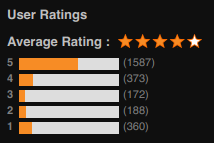
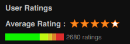

Converts the Crunchyroll User Ratings Histogram into a more compact and easier to read ratings bar.

The original histogram, split into 5 bars

The original histogram, all put into one bar.
You can hover over each of the parts to see exactly how many people rated.